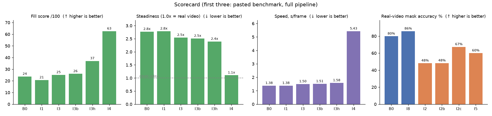
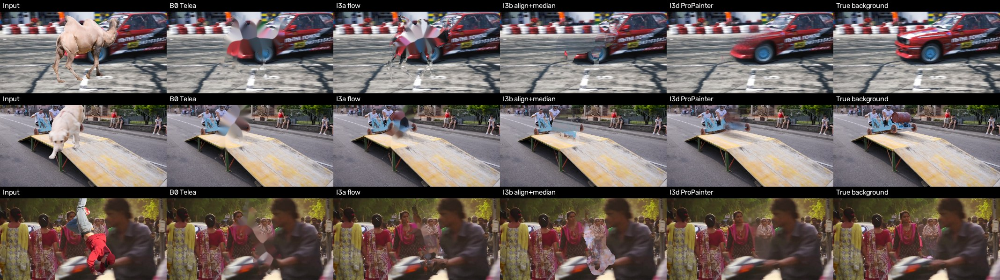
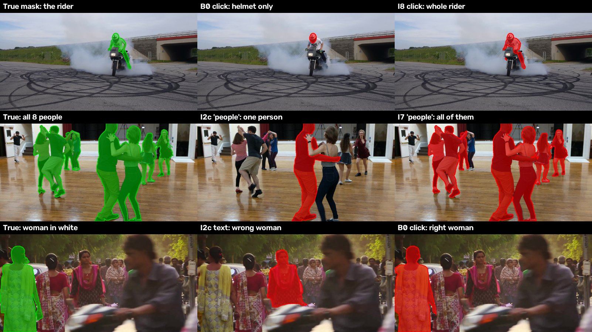

CIS 5810 Final Project · Midterm Report · Option 1 (assembling existing modules) · November 20, 2026
| Group 35 | Daniel Zhang (danielz0@engineering.upenn.edu) · William Huang (whuang28@seas.upenn.edu) |
| Code | github.com/Norrozo/5810finalproject — every number below is in results/*.csv; each run is logged with its command in docs/experiment_log.md |
| Videos | drive.google.com/drive/folders/17oNBUKSdmJQUoJfDs8toNFsOi6T5MVuX |
Audience: casual creators cleaning up phone videos, and people protecting privacy by erasing bystanders before sharing, without frame-by-frame tools such as After Effects. Goals: (1) remove the named object(s) from a 5–10 s, 480p clip with no visible blur or flicker; (2) accept a text prompt, with a click as fallback; (3) measure every change against a fixed baseline, one change at a time; (4) a temporally consistent fill that copies real background wherever it was ever visible (our own methods, I3a and I3b). New since the proposal: “remove all the people” removes every match, and the system asks the user to pick when two candidates look equally likely.
All models are pretrained and used at inference only; our work is the pipeline, the rules that turn model outputs into decisions (when to ask, which mask to keep, how many objects to keep), our own flow-guided fill, and the evaluation. Settings (hop cap 5, alignment window 20, ask ratio 0.7, multi-object threshold 0.45, SAM 2 size) were each chosen on a dev set and then run once on the test set.
One stage at a time. If only the final video is scored, a wrong box makes every number bad and we cannot tell which stage to fix. So each stage is scored with the stages before it replaced by the correct answer:
| Stage | Question | How it is isolated | Score |
|---|---|---|---|
| Grounding | Did the text pick the right object? | frame 0 only | Right object x/10 (box IoU > 0.5); objects found for multi-object prompts |
| Tracking | Does the mask cover the object in every frame? | start from a correct click, or keep only clips where grounding was right | J (region IoU), F (boundary F-measure), J&F, as defined by DAVIS |
| Inpainting | Does the hole look like the real background, without flicker? | every fill method is given the true masks | LPIPS mask, PSNR mask, SSIM, RAFT flicker |
| End to end | What does the user get? | full pipeline | all of the above + seconds per frame |
Test sets (frozen before results; settings tuned only on separate dev sets built from DAVIS train videos): pasted (the proposal's 10 clips: a DAVIS object pasted onto another DAVIS video, so the true background is known and the fill can be scored); real (new: 10 unedited DAVIS val clips, chosen for look-alikes and crowds, scored on DAVIS's own masks); multi-object (new: 5 real clips, 15 objects, prompts such as “pigs” or “women”). Dev sets: 5 pasted, 14 real, 7 multi-object clips. As the proposal expected, the pasted set is too easy for grounding and tracking (a pasted object is usually the only one of its kind), and the real set changed our conclusions (Section 6).
Checking the metrics. We scored fake outputs whose quality we know (src/metric_check.py). PSNR prefers a blurred background (20.5 dB) to a sharp one shifted by 4 px (17.7 dB), which looks better to a person; LPIPS ranks them correctly (0.305 vs 0.087). A flat gray box is almost as steady as the real video (flicker 9.7 vs 7.3), so flicker alone rewards wrong fills. A per-frame brightness flicker scores near-perfect on PSNR, SSIM and LPIPS and is caught only by the flicker metric. So LPIPS replaces PSNR mask as our main fill metric, always read together with flicker (now computed with RAFT, so it does not share a flow estimator with our method). For readability we also report a fill score = 100 × (1 − LPIPS of our fill / LPIPS of leaving the object in) and steadiness = our flicker / the real video's flicker (1.0× = as steady as real footage).
B0 = a click on frame 0 (placed automatically at the deepest point of the true mask) → SAM 2 (sam2.1-hiera-large) → per-frame OpenCV inpainting (Telea, radius 5). On the pasted set B0 tracks well (J&F 0.943) but fills with a visible smear: fill score 24/100, steadiness 2.8×, because Telea spreads border colors inward and each frame is filled independently. On real video the same click gives J&F 0.798: the drop is mostly clicks that SAM 2 reads as a part of the object (the helmet instead of the rider, Figure 3). Runtime is 1.38 s/frame on an Apple M5 laptop, 97% of it SAM 2.
One change per iteration; names follow our proposal. B0, I1, I2, I3a and I3d were in the proposal (I2, I3a, I3d in preliminary form, now run on every new set). I3b, I2b, I2c, I4, I4b, I5, I6 and I7 are new: I3b (alignment + median fill), I4 (re-detection), I5 (speed) and I6 (multiple objects) were proposed; I2b/I2c address the grounding misses the real set exposed; I7 came from a side finding of I5.
| Tag | Change (vs. its parent) | Number it targets | Before → after | Decision |
|---|---|---|---|---|
| B0 | click → SAM 2 → Telea | – | fill 24/100, 2.8×; real mask 80% | baseline |
| I1 | grow mask 5 px, fill holes | fill score | 24 → 21 | rejected |
| I2 | text prompt via Grounding DINO | right object | pasted 9/10; real 5/10 | kept (text mode) |
| I3a | our flow-guided fill, 5-hop cap (dev) | fill score | 24 → 26; 2.8× → 2.5× | → I3b |
| I3b | ours: align frames (homography) + temporal median | fill score | 26 → 37; 2.5× → 2.4× | kept (fast fill) |
| I3d | ProPainter fill | fill score | 24 → 63; 2.8× → 1.1× | kept (best fill) |
| I2b | re-rank text candidates with CLIP | right object | real dev 11 → 6 /14 | rejected |
| I2c | ask the user if runner-up ≥ 0.7 × best score | right object | real 5 → 7/10; mask 48% → 67% | kept |
| I4 | re-detect every 10 frames, re-seed lost tracks | real mask | 67% → 60% | rejected |
| I4b | I4 with a stricter confirm check | real dev mask | 91% → 87% | rejected |
| I5 | smaller SAM 2 models (speed) | speed, same mask | ≤ 1.7× faster; dev 79% → 60–71% | rejected |
| I6 | multi-object prompt keeps every box ≥ 0.45, tracks each | objects found | 5 → 14/15; mask 52% → 87% | kept (text mode) |
| I7 | click keeps SAM 2's largest of 3 masks | real mask | 80% → 86% | kept (click mode) |
Mask = J&F × 100. Fill and steadiness on the pasted set (full pipeline); “real” = real test set. Shaded = kept and improved the target number; gray = rejected. Full per-clip numbers and commands: docs/experiment_log.md, where config names differ (I3a = I3b, I3b = I3h, I3d = I4, I4/I4b = I5/I5b, I5 = I6, I6 = I7, I7 = I8).

Our flow fill (I3a) copies a pixel one frame at a time, so its error grows with every hop, and it was barely better than Telea (26 vs 24/100). As proposed, I3b aligns each neighbor frame to the current one directly: ORB features on the background only (the object is masked out so its motion never votes), a homography fitted with RANSAC (pairs with < 30 inliers are skipped), then each hole pixel takes the median of the aligned neighbors where that spot was background; Telea fills what no neighbor saw. The window (neighbors on each side) was chosen on the dev set with true masks: LPIPS 0.222 / 0.207 / 0.192 / 0.177 / 0.177 for 3 / 5 / 10 / 20 / all frames, so 20 (as good as all frames, 1.7× faster). On the dev set our flow fill scored 0.249 and Telea 0.271. Test set, run once: fill score 26 → 37/100 end to end and 41 → 49 with true masks, better than I3a on 7/10 clips, at 0.23 s/frame for the fill (ProPainter: 4.1 s/frame, 63/100). With true masks it even beats ProPainter on one clip (cows). PSNR mask went down (16.5 → 16.0 dB) while LPIPS improved: the fill is sharp but slightly misaligned, exactly the case our metric check showed PSNR punishes. Figure 2 shows the limits: a median removes anything that moves, so the car driving through the background is half erased, and a moving crowd becomes a smear. It assumes a static background and a panning camera.

The new real test set showed text prompts find the right object only 5/10 times (pasted: 9/10), and when the box is wrong everything after it is wrong (J&F 0.48 vs 0.87 on clips found correctly). I2b re-ranked the detector's candidates with CLIP; on the real dev set it got worse (11 → 6 of 14), because CLIP ignores attributes such as “in white” as badly as the detector. But on dev the right object was in the detector's top 3 on 14/14 clips, and the detector's scores were close exactly when it was unsure. I2c therefore asks the user to pick among the candidates when the runner-up scores ≥ 0.7× the best (ratio chosen on dev). On the real test set it asked on 3/10 clips and raised right object 5 → 7/10 and J&F 0.48 → 0.67, with no change on pasted clips.
As proposed, I4 re-runs Grounding DINO every 10 frames and re-starts SAM 2 if the track looks lost. On the real test set it lowered J&F 0.67 → 0.60: on loading it moved a correct track onto a different man (0.99 → 0.24). I4b added a stricter check before switching, but still lost on real dev (0.91 → 0.87), and across 24 real clips it made 0 correct corrections: SAM 2 never lost the object; the detector was the one that missed. The proposed comparison with SAM 3 is not done yet.
SAM 2 is 97% of B0's runtime, so I5 tried the smaller SAM 2.1 models (real dev, same clicks): at most 1.7× faster, short of the 2× target, while J&F fell 0.79 → 0.60–0.71, with whole-clip failures (kid-football: large 0.99, small 0.02). We keep the large model; lower resolution and chunking are still open.
“Remove the pigs” removed one pig, because grounding kept only the top box. I6: if the prompt is plural (“all/both/every”, or a plural head noun), keep every box scoring ≥ 0.45, drop duplicates, and give each box its own SAM 2 object. The threshold is the strictest value that still found all 23 objects on the multi-object dev set (extra boxes 6; at 0.55 only 19 found). Test: objects found 5 → 14/15, J&F 0.52 → 0.87, better on all 5 test and all 7 dev clips (pigs 0.62 → 0.94, india 0.31 → 0.88). Costs: 2 extra objects removed on the test set, and SAM 2 tracks each object separately (1.26 → 2.17 s/frame).
I5 also showed clicks failing where a box worked: SAM 2 returns three masks for a click (part / bigger part / whole) and B0 keeps the most confident, often a part (12% of a boxer). I7 keeps the largest (rule chosen on dev frame 0: IoU 0.76 → 0.88). Real test J&F 0.80 → 0.86 (mbike-trick 0.24 → 0.92), real dev 0.79 → 0.90. It lost two clips where DAVIS labels less than the whole thing (shooting 0.89 → 0.39: only part of the man is labeled).

The evaluation changed our direction twice: the real-video set moved our attention from the fill to grounding (pasted clips had hidden it), and scoring stages separately showed that re-detection was fixing a tracking problem we did not have.
| Date | Milestone | Status |
|---|---|---|
| Oct 9 | Proposal: B0, I1, I2, I3a, I3d | done |
| Oct 29 | LPIPS + RAFT flicker; real-video test/dev sets; I2b, I2c | done |
| Oct 30–31 | Stage-by-stage evaluation, metric check; I4, I4b, I5, I7 | done |
| Nov 1 | I6 multiple objects; metric charts; demo uses I2c, I6, I7 | done |
| Nov 18 | I3b alignment + temporal median fill | done |
| Nov 20 | Midterm report | this document |
| Nov 21–Dec 4 | Planned: I3b median only where neighbors agree (keeps moving background objects); I3c (flow-initialized diffusion) and I3e (DiffuEraser) if they fit in our 16 GB laptop's memory, compared on the fill-only benchmark; let the user pick among SAM 2's 3 click masks; failure study | planned |
| Dec 6 | Demo Day: live Gradio demo (text and click), side-by-side videos | planned |
| Dec 10 | Final report, code, demo video, README | planned |
| Member | Responsibilities (as in the proposal) |
|---|---|
| Daniel Zhang | Grounding, tracking, mask refinement and re-detection (I1, I2, I2b, I2c, I4, I4b, I7); DAVIS subsets, synthetic benchmark, real-video sets and metric scripts |
| William Huang | Inpainting methods (I3a–I3e) and speed (I5) |
| Both | Gradio demo, demo video, multiple objects and failure study (I6) |
References. Ravi et al., SAM 2, 2024. Liu et al., Grounding DINO, ECCV 2024. Zhou et al., ProPainter, ICCV 2023. Radford et al., CLIP, ICML 2021. Zhang et al., LPIPS, CVPR 2018. Teed & Deng, RAFT, ECCV 2020. Farnebäck, Two-Frame Motion Estimation Based on Polynomial Expansion, SCIA 2003. Telea, An Image Inpainting Technique Based on the Fast Marching Method, 2004. Pont-Tuset et al., The 2017 DAVIS Challenge, 2017. Generative AI: Claude (Anthropic) wrote most of the code, ran the experiments with us and drafted this report from our experiment log; details and what was copied are in AI_USAGE.md.